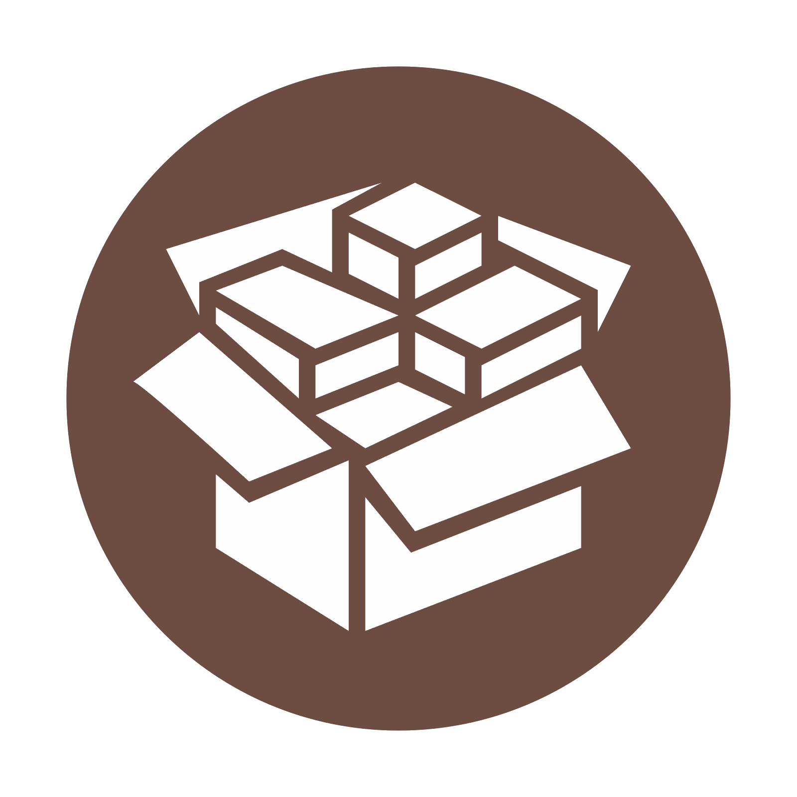

凝聚网络安全工作室
Cohesion Network Security Studio
2018 招新宣讲
凝聚十周年宣传片
// Shot and rendered in year 2017.
凝聚特色
only in CNSS
1. 去行政化，不依赖计算机学院生存
没有办公室职务，只做纯技术研究
2. 只招收真正对技术有兴趣，并且有毅力、有一定自学能力的同学
低水分、高质量的交流氛围
3. 涉猎广泛，触类旁通
不仅限于安全方向，开发、运维和美工方向在校内也是独步武林
CNSS 2018 主攻方向
-
Binary / 二进制安全
系统内核原理、逆向工程、漏洞挖掘 -
Web安全
渗透测试、漏洞攻防、数据库安全 -
Cryptograpy / 密码学
数论算法、通讯安全、协议分析 -
DevOps
AI全栈、Web高性能开发、服务器运维 -
Design / 美工
UI/UX 设计、网页以及海报设计制作 -
Game
OSU、LOL、GALGAMEs、WoW、Minecraft、MH World、OW、neko、l4d2 、dota2 ......
各方向介绍
Binary / 二进制安全
Office 漏洞现场演示
------> 从计算器到远程控制
by AiHimmel
二进制安全？
Reverse Engineering (逆向工程)
PWN (漏洞利用、系统提权）
Kernel Programming (内核编程)
逆向所需技能
编程能力 ---> 基础
能熟练运用调试工具 + 了解操作系统相关知识
了解基本加解密方法
足够的耐心(重点)
> > PWN / 漏洞挖掘与利用 < <
寻找潜在的程序漏洞，编写利用代码，获得系统权限
PWN -> Further more ... ?
贴近生活的例子
-

iOS 越狱
-
Android root 提权
PWN 所需技能
扎实的逆向工程基础
对目标操作系统底层的深入理解
二进制方向书单
---《汇编语言》 - 王爽
《逆向工程核心原理》- 李承远
《深入理解计算机系统》- Randal E.Bryant / David O'Hallaron
《Android软件安全与逆向分析》- 丰生强
《加密与解密》- 段钢
逆向常用工具
---OllyDbg （古董级别调试器）
GDB - *nix 下调试利器
X96Dbg - 开源、持续更新
dnspy - 现代化的 .NET 程序分析神器
IDA Pro - 逆向工程师的梦中情人
Web 安全
Pentest / 渗透测试
模拟恶意黑客的攻击方法 -> 评估现有计算机网络系统的安全
挖掘服务器、网站漏洞并修复，加固防御体系
暗流涌动的Web世界
------> 从CTF到渗透测试
by N0rth3ty
> > Pentest 所需技能 < <
VPS Linux la(n)mp
了解 HTML/JS/CSS 前端三巨头
修炼一门自己喜欢的后台语言
(PHP/Python/Go...)
> > Pentest 常用工具 < <
Burpsuit
Awvs
Wireshark
Sqlmap
Nmap
......
Web安全 书单
---《白帽子讲web安全》 - 各种漏洞的综述 《web前端黑客技术揭秘》- 前端漏洞的更详细说明 《web之困：现代web应用安全指南》- web浏览器安全解析 《黑客攻防技术宝典》- web实战篇 《xss跨站脚本攻击剖析与防御》 《SQL注入攻击与防御》
DevOps
什么是 DevOps
Development and Operations
软件开发 & IT运维
美工 / Design
美工
有需求？先扫码付款
(划水摸鱼混吃抱大腿方向)日常摸鱼招新期间日常 忙碌 秃头
负责招新宣传以及门面设计
海报、传单、衣服、桁架(下一届的美工能把视频和平台写了就很棒！)
/* 与其他方向成员享有同等的内部资源技术交流、混吃混喝、内部福利 */


{kind=link}
{kind=link}